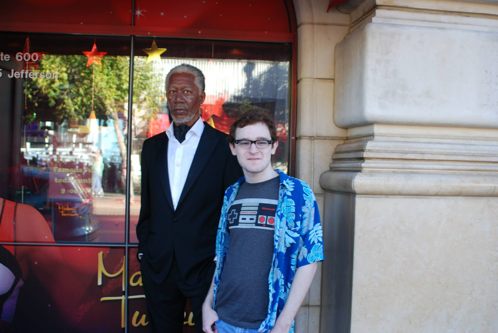

About Me

<--"bio" class used to separate each paragraph of the biography-->
Hello everyone! My name is Zach Adkins, and I am a senior majoring in Computer Information Systems. I am planning on graduating next year after I find an internship. I hope to get one in either programming, web design, or in database work.
I have not had much actual experience yet, but I have made a small website for my step-dad's hobby club recently. Also, I am generally good with fixing computers as long as it is not a big hardware issue. I learn best from hands-on projects such as these, and because of this I find it a bit difficult to remember information taught in lectures for very long. Scholastically, my strongest point is in how quickly I can learn new things if I have interest in the topic. My weakest point would be in my procrastination, but I almost always get my work done.
I spend a lot of my free time playing videogames, listening to music, and sometimes watching anime. I mainly play League of Legends, but sometimes I switch it up with other PC games on Steam if I find something that catches my eye. My favorite type of music would be chiptune music. School is my priority until I graduate, but these activities get me to procrastinate some of the time.
Contact Information
Email: adkinsz1@ferris.edu
Phone: (231)220-3158